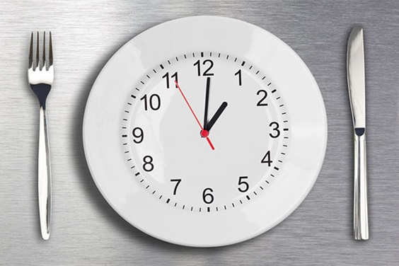

CONTACTO
Para cualquier información contactanos.
55-50-74-09-51
SIGUE NUESTRAS REDES SOCIALES !!!


La dieta de una sola comida al día es un plan de pérdida de peso que asegura ayudar a las personas a perder peso mediante el ayuno intermitente. Al seguir esta dieta, únicamente realizamos una comida al día, generalmente la cena, y no se consume ninguna caloría más a lo largo del día. Sigue el tipo de ayuno denominado 23: 1, lo que significa que nos pasamos 23 horas al día ayunando y 1 hora al día comiendo y bebiendo.
Hay varias variaciones de esta dieta. Algunas sugieren consumir alimentos saludables y ricos en nutrientes, pero la mayoría de las versiones de esta dieta permiten a las personas comer lo que deseen durante su única comida del día.
Las personas que siguen esta dieta creen que existen numerosos beneficios al comer de esta manera, incluida la pérdida rápida de peso sin contar las calorías y sin 'cheatmeals' o 'comidas trampa', porque no hay alimentos prohibidos.
Se han realizado varios estudios sobre los efectos del ayuno intermitente. Sin embargo, la mayoría se han llevado a cabo en hombres, de ahí que se tenga menos información acerca de los efectos del ayuno intermitente en las mujeres.
Debido a los ciclos hormonales, es probable que los efectos del ayuno intermitente sean diferentes en las mujeres. También tienen distintos requisitos nutricionales en comparación con los hombres, incluido más hierro, que puede no cumplirse durante el ayuno.
Los estudios realizados sobre ayuno intermitente muestran que puede ayudar a reducir los niveles de azúcar en la sangre y reducir el peso en personas con diabetes tipo 2, afectar positivamente a los ciclos de alimentación y sueño de las personas obesas y aumentar su esperanza de vida y puede beneficiar al sistema cardíaco y mejorar la memoria.
"Los riesgos de seguuir esta dieta son mayores que los posibles beneficios"
Si bien algunas investigaciones respaldan los beneficios del ayuno intermitente y la dieta de una comida al día, este tipo de gestión de la comida conlleva varios riesgos: sentirse extremadamente hambriento, inestabilidad, debilidad, irritabilidad, incapacidad para concentrarse, fatiga, etc.
También existen riesgos graves para las personas con afecciones médicas subyacentes. Aquellos con diabetes o bajo nivel de azúcar en sangre (hipoglucemia) necesitan realizar comidas regularmente durante el día para evitar cualquier efecto secundario grave.
El mismo estudio también descubrió que los participantes que seguían una dieta intermitente en ayunas no experimentaron más pérdida de peso que aquellos que simplemente redujeron el número de calorías que comían cada día.
Finalmente, las personas que siguen la dieta de una comida al día pueden tener un mayor riesgo de atracones y caer en el trastorno por atracón, un patrón de alimentación desordenado en el que se ingieren cantidades inusualmente grandes de alimentos en un corto período de tiempo, incluso después de que esa persona se sienta llena o satisfecha.
La dieta de una comida al día no es la mejor opción para perder peso, ya que algunas personas corren más riesgo de sufrir efectos secundarios adversos. Aquellos que deseen perder peso deben comenzar por hacer cambios pequeños y sostenibles en su dieta y en su estilo de vida. Lo mejor es consultar a un médico sobre cómo perder peso de manera segura, especialmente si tenemos alguna afección médica subyacente.
Para cualquier información contactanos.
55-50-74-09-51
SIGUE NUESTRAS REDES SOCIALES !!!